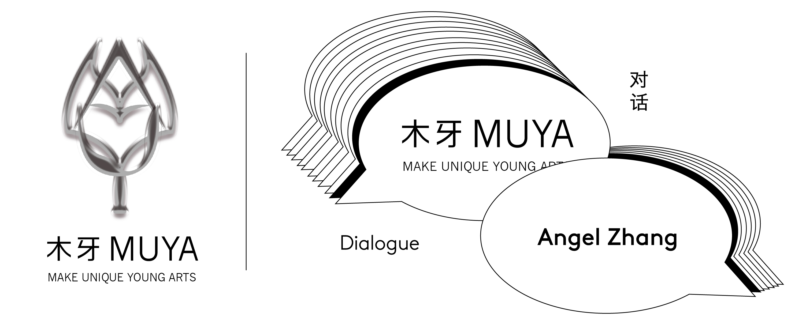
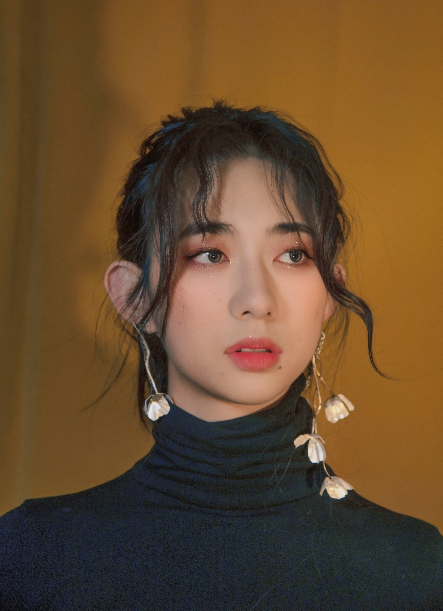
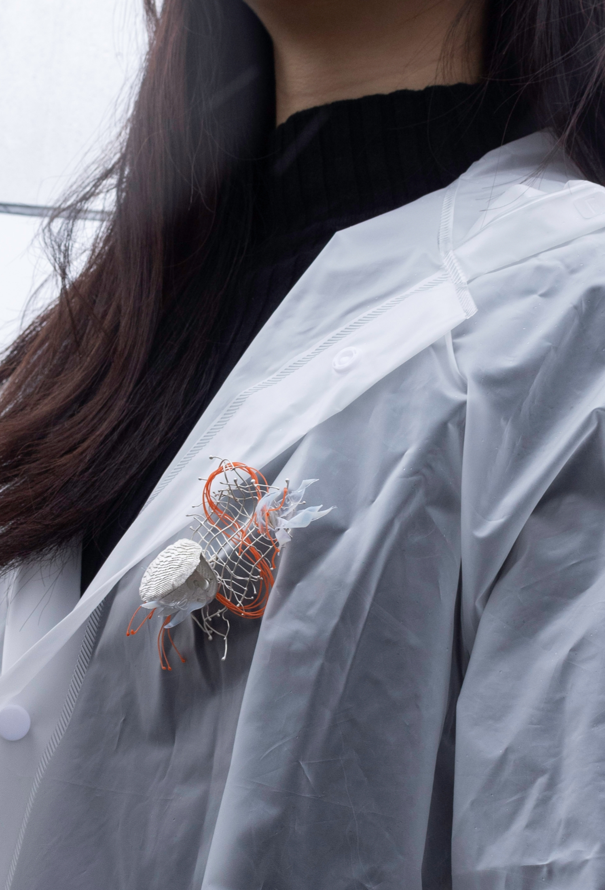
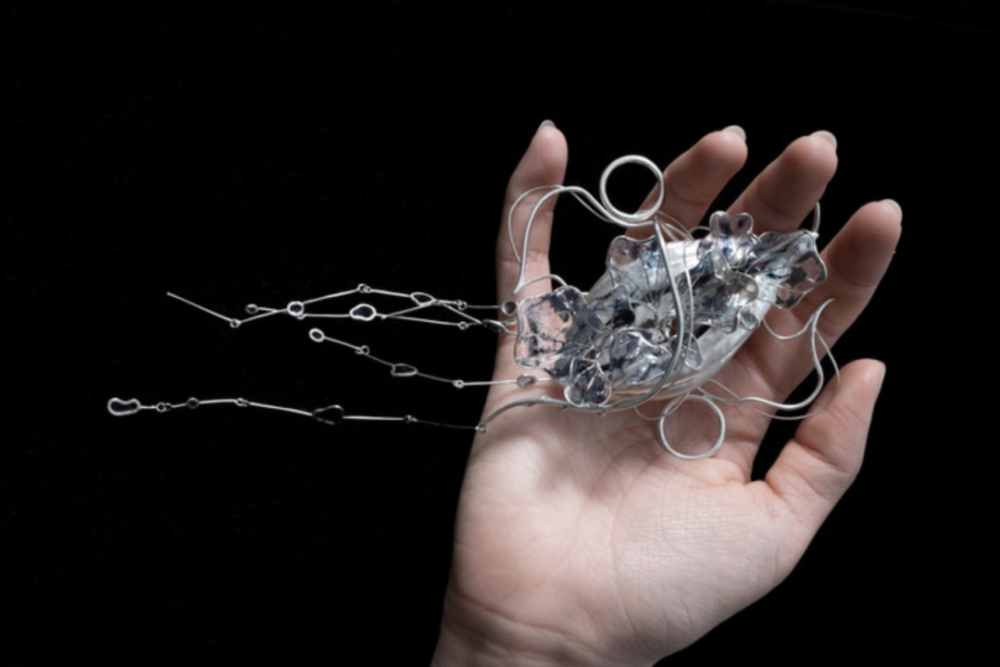
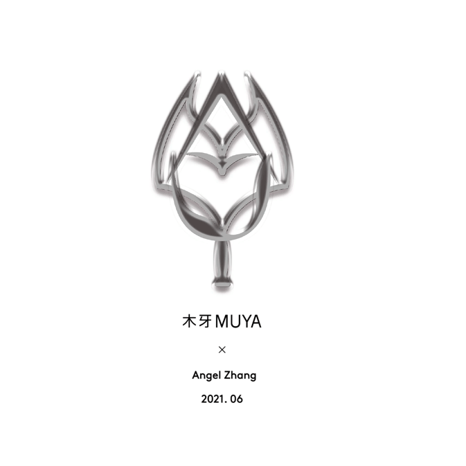
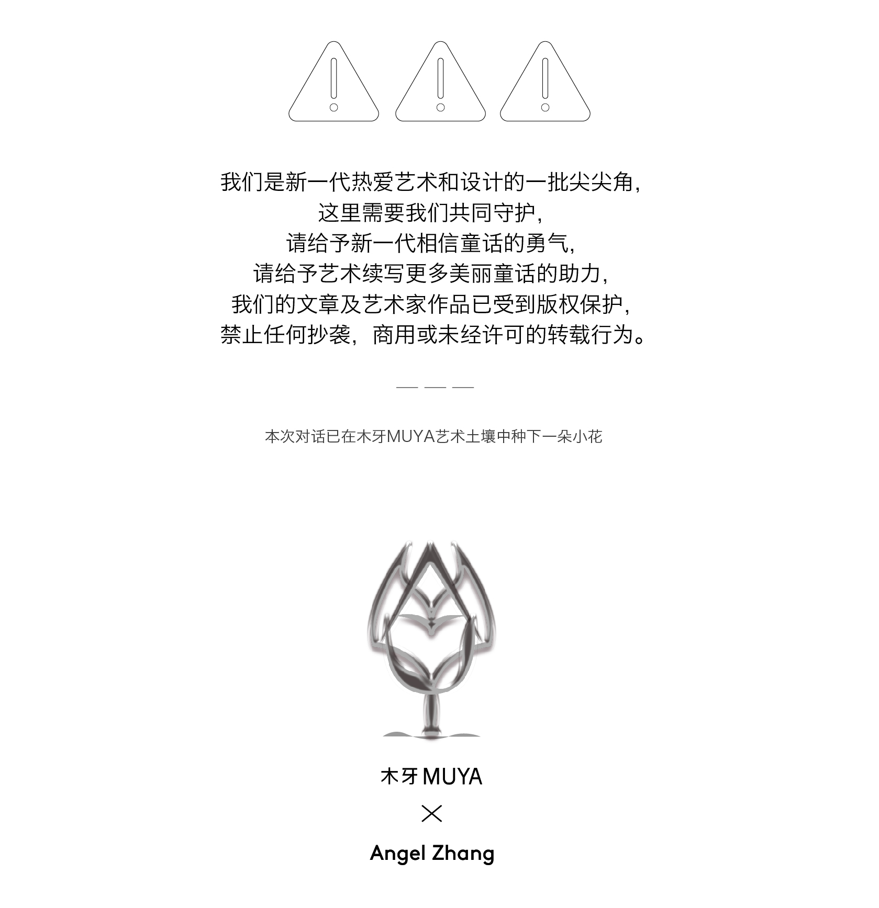

银色精灵与危险之物 | Angel Zhang 「艺术访谈」
欢迎来到木牙Make Unique Young Arts，来观察和了解人体的脆弱和大自然的柔美～
在物质循环的底层存在着这样的一种物体，它没有所谓的价值，是被遗弃的对象，失去了被使用的可能，无法再次被利用，也不再被需要。———— 垃圾
而这样的定义是作为垃圾生产者的我们给出的极为主观的判断。对于环保的言论充斥在我们的生活中，整个网络都在抨击着过度浪费的行为。然而我们却无法停止我们的双手依旧不间断的生产着它们。在消费主义的不断刺激下随之扩大的是垃圾处理厂的面积。是什么减缓了我们制造垃圾的速度？是一个个环保宣言，一个个宣扬和制作可回收可降解塑料的公司，是垃圾分类等。最大的减缓，其实是疫情，这是一个悲伤的事实。疫情后出现的生态复苏，动物回巢都在暗示着一切的不同。
每个艺术作品的背后都附着制作者的期盼，今天我们邀请了Angel Zhang来到木牙MUYA用珠宝的语言来展示她对自然的欣赏，对野生动物和身体健康的影响的关注，以及试图表现人体的脆弱和大自然的柔美的作品。
At the bottom of the cycle exists such a material, it has no so-called value, is the abandoned object, lost the possibility of being used, can not be used again, is no longer needed. -- Rubbish
Such a definition is a highly subjective judgment given by us as waste producers. The talk about environmental protection is full of our life, and the whole Internet is attacking the behavior of excessive waste. And yet we can't stop our hands from producing them. With the constant stimulation of consumerism has come the expansion of the area of waste disposal plants. What is slowing down the rate at which we produce rubbish? Is a declaration of environmental protection, a promotion and production of recyclable biodegradable plastic companies, is waste classification, etc. It is negative that the biggest slowdown has been the epidemic. The ecological recovery after the epidemic, the return of animals to the nest, all suggest that everything is different.
Behind every work of art is the expectation of the maker. We invited Angel Zhang to MUYA to showcase her appreciation of nature, her concern for wildlife and the impact of physical health, and her works that attempt to express the fragility of the human body and the softness of nature in the language of jewelry.

Angel Zhang 是一位出生于 Windhoek,Namibia的珠宝设计师。作为中国父母的第一代 Windhoek公民。安琪尔会说四种语言(英语、普通话、德语和南非荷兰语)，她的多元文化背景让她培养了一种全球思维。让她通过不同的视角看世界，并通过她的作品参与到关于自然的脆弱性和人类造成的环境精神影响的全球对话中。
Angel 毕业于纽约普拉特学院，获得艺术学士学位，进一步将跨文化视角融入她的生活中。在经历了纳米比亚丰富的自然环境后，她现在住在一个大都市，在那里她对自然有了一种新的欣赏。这些观点在她的最后一篇论文中得到了诠释，论文的重点是消费及其对野生动物和身体健康的影响。
Angel Zhang is a jewelry designer who was born and raised in Windhoek, Namibia. As a first-generation Namibian citizen to Chinese parents. Speaking four languages (English, Mandarin, German, Afrikaans), Angel’s multicultural background has allowed her to cultivate a global mindset. Allowing her to see the world through a different lens and enabling her to engage in global conversations about the fragility of nature and environmental mental impacts caused by the Anthropocene through her work.
Angel graduated with a BFA from Pratt Institute in theNew York City to further incorporate cross-cultural perspectives in her life. After being exposed to Namibia’s rich natural environment for the majority of her upbringing, she now lives in a metropolis, where she developed a new appreciation for nature. These ideas are translated in her final thesis, which focuses on consumption and its effects on wildlife and physical health.


“Amanita”这一系列，近距离观察了人类的内部器官。我们无法看到自己的内在，我们通过想象，从理论上解剖和撕裂自己，在自然中处理，从我们的身体中暴露出带有毒性的消费主义产品。因为许多化学物质和污染物，如塑料，不能分解，动物和野生动物经常受到影响。然而，是否有可能找到我们通过食用受影响的自然而在自己的身体系统中创造的有毒物质?
我的生物形态作品从自然界的生物中获得灵感; 在植物区系中，进行荚状结构和花瓣的观察。它们代表了毒素的分散和扩散。豆荚用细银或模压成型，而花瓣丝结构被浸入紫外线树脂中，创造出透明的花瓣元素，通过敲击和模压放置在银豆荚内。在明亮的银色中，颜色的暗示出现在透明的树脂中。随着光线的照射，这些元素被照亮并焕发出生命。通过这种方式，我试图表现人体的脆弱和大自然的柔美。
This collection, Amanita, takes a closer look into the internal organs of human beings. Unable to see our insides, we imagine through the pieces and theoretically dissect and rip ourselves open, exposing the toxic consumerist products disposed of in nature that ruptures out of our bodies. Because many chemicals and pollutants, like plastics, cannot decompose, animals and wildlife are often affected. However, is it possible to find poisonous substances we created in our own bodies’ systems by consuming the affected nature?
My biomorphic pieces gather their inspiration from organisms found in nature; pod-like structures, and petals observed in flora. They represent the dispersion and spread of toxins. Pods are chased with fine silver or die-formed, while the petal wire structures are dipped into UV resin to create transparent petal elements that are placed inside the silver pods with tap and die. Within the bright silver, hints of colors appear inside the clear resin. As light shines through the pieces, the elements illuminate and come to life. In this way, I attempt to represent the fragility of the human body and the delicacy of nature.

➤ 木牙MUYA:作品中塑料的部分Angel使⽤的是回收塑料吗？除了使⽤塑料类化学材料Angel是否有在构想使 ⽤ 其他的特殊化学物质同样破坏着环境应⽤在新的⼀组作品中？
Do the plastic part of the work use recycled plastic? In addition to the use of plastic chemical materials, is Angel thinking that use of other special chemical substances will also destroy the environment and be applied in a new set of works?
Angel: 在我的作品中，比如滤液，我使用了从家里回收的食物容器和被冲上海滩的钓鱼线。我已经设计并思考了很长一段时间，我可以做些什么来传达我的信息，即我们制造的废物不会产生更多的废物。即使它不是很大的影响时，使用这么小的数量。然而，要在不造成某种浪费的情况下执行可持续的做法是很棘手的。在未来的收藏中，我一定会进一步扩展我的知识，推动使用更可持续的材料的想法。与这些领域的科学家合作，了解对环境和我们的健康更安全的化学品将是理想的。
With my pieces, such as Filtrate, I had used recycled food containers from home as well as a fishing line found washed up on the beach. I had designed and had long thought processes of what I can do to relay my message of waste we produce without creating more waste. Even Though it is not much of an impact when using such a small amount. However, It is tricky to enforce sustainable practices without causing some kind of waste. In future collections, I definitely would further expand my knowledge and push the ideas of working with more sustainable materials. It would be ideal to collaborate with scientists in these fields and understand chemicals that would be safer to use for the environment and our health.


➤ 木牙MUYA:作品讲述的是化学物质对于环境的影响，在⽣活中Angel是否也是环境保护倡导者身体⼒⾏传达 ⾃⼰的概念？类似在⽣活中减少使⽤塑料袋等？
The work is about the impact of chemical substances on the environment. Is Angel also an advocate of environmental protection in life to convey your own concept? Similar to reducing the use of plastic bags in life?
Angel: 生活在纳米比亚，以可持续发展为主题，我们一直被教导要节约用水，使用太阳能和循环利用。在搬到美国后,我继续回收(垃圾分类)和支持可持续的电力公司。作为一种生活方式，我不仅尽可能少地使用吸管和塑料容器，我还在学习哪些化学物质会影响大自然——例如，必须购买对珊瑚礁安全的护肤品，比如防晒霜。另外，要确保我的产品是天然的，没有像聚乙烯(PE)这样的微珠。购物时，我们经常使用可重复使用的购物袋，尽量避免购买塑料购物袋。
With the topic of sustainability, living in Namibia, we were always taught to save water, use solar power and recycle. Throughout the years after moving to the US, I have continued to recycle (垃圾分类) and support sustainable electricity companies. As a lifestyle, I not only refrain from using as few straws and plastic containers as I can, I am also still learning about what kinds of chemicals affect nature—for example, having to purchase skincare products, such as sunscreen, that are reef safe. Also, making sure that my products are natural and free of microbeads, like polyethylene (PE). Shopping for groceries, we often use reusable grocery bags and avoid purchasing plastic shopping bags when we can.


➤ 木牙MUYA:是什么原因让Angel选择了珠宝设计专业作为⾃⼰的本科专业？可以详细的讲讲吗？如果要读研 究⽣是否会继续这个专业？
What made Angel choose jewelry design as your undergraduate major? Could you tell us some me the details? Will you continue this major if you want to go to graduate school?
Angel: 在申请大学之前，我已经决定要进入艺术和设计的世界。我经常改变自己的想法，到底要学习什么，包装设计，室内设计，还是时尚。最后，我决定学习平面设计，因为我对插图，广告，以及包装感兴趣。直到我去了PrattMWP，在那里我遇到了我的珠宝教授。她在大一时教我3D设计，并介绍我珠宝。我发现比起平面设计，我对珠宝工艺更感兴趣。珠宝的世界对我来说并不陌生，但是当我发现更多关于珠宝，特别是艺术珠宝的时候，我对它越来越感兴趣和热情。现在我已经毕业了，我计划明年继续在珠宝设计专业学习，进一步提高我的工艺技能，尝试各种材料，拓宽我的创造性知识。
Before applying to universities, I had already decided that I would enter the art and design world. I often changed my mind on what to study precisely, whether it was package design, interior design, or fashion. Finally, I had made a decision to study graphic design, as I had an interest in illustration, advertising, as well as packaging. It was not until I went to PrattMWP, where I had met my jewelry professor. She taught me 3D design in freshman year and introduced me to jewelry. I had found more interest in the craftsmanship of jewelry more than I did in graphic design. The jewelry world was unfamiliar to me, but I had grown more interested and passionate about it when discovering more about jewelry, specifically art jewelry. Now having graduated, I have plans to continue my studies in jewelry design next year, to further improve my skills in my craft, experiment with various materials, and broaden my creative knowledge.

➤ 木牙MUYA:被消费主义包围的我们除了现实中对⾃然的破坏，实际上在虚拟世界中也有着许多⼈造”“排 泄物”影响着我们的精神世界。对于这类的伤害Angel是否有想结合在作品中？
Surrounded by consumerism, in addition to the destruction of nature in reality, there are actually many man-made "excrements" in the virtual world that affect our spiritual world. Does Angel want to incorporate this type of harm in his works?
Angel: 我很清楚社交媒体是一个有毒的地方，它可以摧毁一个人的精神，导致许多不必要的不安全感和有关精神健康的问题。在我的一生中，我经历了必须应对社会意识形态的影响。因为社交媒体是一个如此开放的平台，许多人很容易陷入比较彼此帖子的自毁习惯，即使只是在表面上。社交媒体描绘了人们的“完美”生活，我认为这是一个值得讨论的重要话题，因为不只是你和我有这种感觉;几乎是所有能上网的人。
我想创造一些可以更深入地探讨这个话题的东西，特别是关于女性，甚至男性，如果他们的外表或行为不符合某种特定的方式，以及随之而来的虐待，会如何感到不完美的意识形态。和许多艺术家一样，这个话题已经变得很重要，我认为艺术让我们可以表达我们对这个问题的看法。
I am well aware of how social media can be a toxic place that can break down one’s spirits and cause many unwanted insecurities and issues regarding mental health. I have experienced throughout my life having to deal with the effects of social ideologies. Because social media is such an open platform, many people easily fall into self-destructing habits of comparing each other’s posts, even if it is only on the surface. Social media portrays people’s “perfect” lives, and I think it is an important topic to talk about because it is not only you and me who feel this way; it is almost everyone who has access to the internet.
I would like to create something that could potentially dive deeper into this topic, especially the ideologies of how women, even men, feel imperfect if they do not look or act a certain way and the abuse that comes with it. Like many artists out there, this topic has become an important one, where I think art allows us to express our opinions on the matter.

➤ 木牙MUYA:2021 艺术的边界逐渐被打破的局势越发明显。Angel认为是什么样的发展方向促使着这样的局势？与现有的国内情况结合看待这一类发展？
It is increasingly clear that the boundaries of art are being broken in 2021. What direction does Angel see driving the situation? To view such developments in the context of existing domestic conditions?
Angel: 我认为珠宝是一种亲密的艺术媒介，它将身体融入到作品中。在设计作品的时候，我想要一些能够表达和夸大细节背后的叙述的东西。特别是在作品《Riven》中，如果没有手势，作品的感觉将不复存在。手和身体的运动给作品带来了更多的诗意和戏剧性的能量，几乎把它们带到了生活中。佩戴者的沮丧和情绪通过与珠宝的互动被描绘出来。人们说你可以通过研究一个人的肢体语言来了解他的感受，我相信有时候行动比语言更响亮。
I think jewelry is an intimate medium for art, and it integrates the body into the work. When designing the pieces, I wanted something that could express and exaggerate the narrative behind the details. Especially with the piece, Riven, without the hand gesture, the feeling of the piece would not exist. The hands and body movement brings more poetic and dramatic energy to the piece, almost bringing them to life. The wearer’s frustrations and emotions are portrayed through the interactions with jewelry. People say you can tell a lot about how a person feels by studying their body language, and I believe that sometimes actions speak louder than words.

➤ 木牙MUYA:能简要的与我们分享下，在“Posion From Within”的系列作品中，使⽤银（silver）这个材料的灵感来源和选择原因吗？
Could you briefly share with us the inspiration and reason for using silver in the series "Posion From Within"?
Angel: 我主要是用银器;它不仅是在它的颜色纯净，而是它的不同的感觉与不同的完成。颜色是最吸引我的，因为它不仅在阳光下发光，而且它还反射了表面的阳光，突出了每件作品的其他元素，如树脂部分。由于银的历史用途，我也认为它适合作为一种材料。纵观中国历史，我们知道银被用来检测毒药，特别是砷。人们认为，当银接触到这种无法检测到的毒药时，它会变成黑色。就像那些对我们有害的化学物质一样，我们常常无法检测到它们。
I mostly used silver; not only is it pure in its color, but it the different feeling it gives off with different finishes. The color was what attracted me the most as it not only illuminated under the sun but it had also reflected the sunlight off its surface, highlighting other elements of each piece, such as the resin parts. I also saw it fitting to use silver as a material due to its historical use. Throughout Chinese history, we know of silver being used to detect poison, specifically arsenic. It was believed that silver would turn black when it came into contact with the undetectable poison. Like the chemicals that harm us, we often do not detect them.

➤ 木牙MUYA:当代⾸饰的功能性已经不仅仅局限于⼈体的配饰，Angel如何看待当代⾸饰在当下的不同⽅⾯的变化的呢？变化⼜是怎样的？
The functionality of contemporary jewelry is no longer limited to the accessories of human body. How does Angel view the changes of contemporary jewelry in different aspects at present? What's the change?
Angel: 在决定学习珠宝之前，我只认为珠宝是一种配饰，大多数人都是这样想的。然而，它不仅是一个配件，它还被用来表达你的身份。在当代世界，我认为珠宝不仅仅是一种身体的装饰品。不过，这更多的是艺术家的表达，就像通过三维形式写诗，操纵和使用身体作为作品的一个元素。这种叙述与身体的能量是一致的。它不仅仅是一个配件，就像一幅画不是唯一的装饰一样。如今，人们对珠宝作品背后的概念和意义非常感兴趣，更多概念性的珠宝作品正在社会上被突出。
Before deciding to study jewelry, I had only thought of jewelry as an accessory, which most people do. However, not only is it an accessory, it is used to express your identity. In the contemporary world, I think jewelry is not just a bodily ornament. Still, it is more of an artist’s expression, almost like writing poetry through three-dimensional forms, manipulating and using the body as an element within the work. This narrative coincides with the energy of the body. It is not just an accessory like a painting is not the only decor. Nowadays, people are very interested in the concepts and meaning behind jewelry pieces, and more conceptual pieces of jewelry are being highlighted in society.

➤ 木牙MUYA: 最近在读些什么书？有没有特别值得推荐的？可以大概讲一下内容怎么发现这本书的和为什么读吗？
What are you reading these days? Do you have anything in particular to recommend? Can you tell me a little bit about how you found the book and why you read it?
Angel: 赫尔辛基的艺术珠宝商Wiebke Pandikow是我最大的灵感来源之一，她利用塑料袋废料将其改造成美丽精致的树叶。她的作品确实给我留下了深刻的印象，因为她的工艺和耐心创造了如此精致的作品，把塑料袋变成奇思妙想的作品。
A Helsinki-based art jeweler, Wiebke Pandikow, is one of my biggest inspirations as she works with plastic bag wastes and transforms them into beautiful delicate leaves. Her work truly leaves a sparkling impression in my eyes as her craftsmanship and patience have created such delicate work that manipulates plastic bags into whimsical pieces.

✯ Which inspire your works most ✯
“Well, maybe it started that way. As a dream, but doesn’t everything? Those buildings. These lights. This whole city. Somebody had to dream about it first. And maybe that is what I did. I dreamed about coming here, but then I did it.” —James and the Giant Peach by Roald Dahl
“ 好吧，也许一开始就是这样的。作为一个梦想，而不是一切? 这些建筑。这些灯。整个城市。总得有人先梦到它。也许这就是我所做的。我先是梦到了这里，然后我也来到了这里。 ”

✤ Angel Zhang网站（Angel Zhang Website)
✤ Angel Zhang INS：@design.angles
✤ Angel Zhang邮箱（Angel Zhang Email)：angelzhang14@gmail.com


木牙微信订阅号